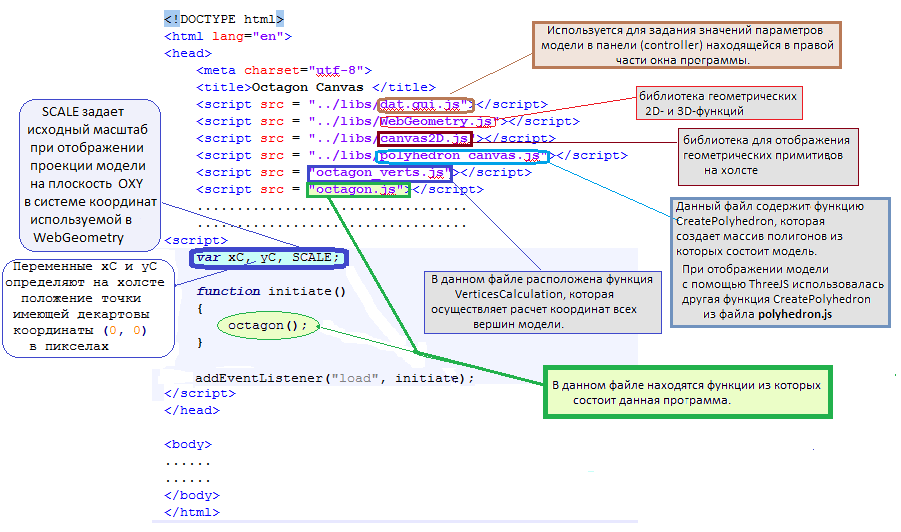

В предыдущем разделе было рассмотрено построение неизменяемой модели многогранника октагон, которую можно вращать мышью. В данном разделе мы добавим возможность изменять размеры отдельных частей модели, высвечивать номера вершин, выбирать отдельные грани и отображать значения координат всех точек принадлежащих модели. Напомним, что расчет координат вершин модели полностью и без изменений взят со страницы Глава 5. Многогранник октагон (часть 1).
По ссылке Глава 5. Многогранник октагон (часть 1) можно увидеть точно такую же модель огранки октагон, но вывод на холст которой осуществлен при помощи функций библиотеки ThreeJS. Никаких принципиальных отличий в изображении модели на холсте в обеих программах нет. Есть отличия в панелях управления расположенных рядом с холстом. В новой программе отсутствует панель имеющая желтый цвет (она находится в центре окна в старой программе). Несколько изменена панель (controller) в правой части окна. Она предназначается для задания значений параметров модели и создается на основе библиотеки dat.GUI. Описание работы и примеры использования этой библиотеки можно найти в интернете по адресу dat.GUI.
Работа программы начинается с вызова функции имеющей название octagon. Этот вызов расположен в следующей HTML программе: octagon происходит создание и задание параметров холста, создается
панель (controller) управления значениями параметров модели и расчет координат вершин модели (функция recalc).
После этого происходит вывод изображения модели на холст (функция draw).
В процессе работы программы пользователь используя панель управления (controller) может изменять
значения параметров модели. При каждом изменении параметров происходит пересчет координат вершин модели
путем вызова функции recalc. Измененная модель отображается на холсте функцией draw.
Изображение модели будет находиться в web-элементе div класса "out".
Этот блок имеет относительное (relative) позиционирование в нормальным потоке элементов
на web-странице.
Внутри этого блока div расположены два других блока имеющих относительно него абсолютное позиционирование.
В левом из этих двух блоков расположен элемент типа canvas (ему присвоен идентификатор canvas_draw).
В правом из этих двух блоков расположен элемент
gui_container предназначенный для задания и изменения значений параметров модели.
octagon.
Ее полный исходный текст можно найти в файле octagon.js.
function octagon()
{
// получаем ссылку на элемент canvas_draw, который показан на рисунке выше:
elem = document.getElementById('canvas_draw');
elem.style.position = "relative";
elem.style.border = "1px solid";
// Получаем 2D-контекст рисования на холсте.
// Когда мы отображали модель с помощью функций библиотеки ThreeJS,
// мы получали трехмерный контекст для рисования "3d".
ctx = elem.getContext("2d");
ctx.font = "italic 10pt Arial";
ctx.fillStyle = '#0000ff';
// SCALE задает ИСХОДНЫЙ масштаб при рисовании проекции модели на плоскость OXY
SCALE = 320;
// xC и yC задают в данном случае примерно центральную точку на плоскости OXY (на холсте)
xC = elem.width / 2;
yC = elem.height / 2.2;
// Расчет координат вершин 3D модели.
recalc();
// Вывод модели на экран
draw();
// Обработчики событий связанных с мышью.
elem.onmousedown = handleMouseDown;
document.onmouseup = handleMouseUp;
elem.onmousemove = handleMouseMove;
Установка первоначальных значений в dat.GUI.
Эти значения будут определять значения параметров
при первом выводе изображения модели на холст.
Также задаем значения углов на которые будет повернута модель
и коэффициент масштабирования.
controller = new function()
{
this.lw = lw;
this.r = r;
this.corner_br_ratio = corner_break_ratio;
this.corner_br_angle = corner_break_angle / DEGREE; // перевели в градусы;
this.hCrown = hCrown;
this.angle_B0 = angle_B0 / DEGREE; // верхний угол короны
this.angle_B1 = angle_B1 / DEGREE; // верхний угловой угол короны
this.angle_A0 = angle_A0 / DEGREE; // нижний угол короны
this.H2H = H2H;
this.hp = hp; // глубина павильона
this.angle_C0 = angle_C0 / DEGREE; // Угол наклона грани A
this.angle_C1 = angle_C1 / DEGREE; // Угол наклона грани B
this.angle_C2 = angle_C2 / DEGREE; // Угол наклона грани C
this.hLowerFacet = hLowerFacet; // Отношение высоты LowerFacet к hp
this.hMiddleFacet = hMiddleFacet; // Отношение высоты MiddleFacet к hp
// значения углов на которые повернута модель
this.rotationX = angleX/DEGREE;
this.rotationY = angleY/DEGREE;
this.rotationZ = angleZ/DEGREE;
// scale_controller позволяет измененять размеры модели на экране
this.scale_controller = scale_controller;
// Если enumeration = true, то на экран выводится нумерация вершин модели.
this.enumeration = false;
this.sizes = false;
}();
Создаем новый объект dat.GUI
с правой стороны от холста (canvas).
В панели dat.GUI будут отображаться значения параметров модели.
Также будет возможность при помощи dat.GUI изменять эти значения параметров.
При помощи dat.GUI можно поворачивать модель вокруг осей X, Y, Z
и изменять ее размер на холсте.
Поля enumeration и sizes позволяют включать/выключать отображение нумерации
вершин модели и простановку размеров модели на холсте.
gui = new dat.GUI({ autoPlace: false });
gui.domElement.id = 'gui';
gui_container.appendChild(gui.domElement);
// Для включения / выключения отображения нумерации вершин в контроллер
// вводим поле 'enumeration'
gui.add( controller, 'enumeration', false ).onChange( function()
{
enumeration = controller.enumeration;
recalc();
draw();
});
// Для включения / выключения отображения некоторых характерных
// для модели размеров в виде отрезков со стрелками на концах
// в контроллер вводим поле 'sizes'
gui.add( controller, 'sizes', false ).onChange( function()
{
sizes = controller.sizes;
recalc();
draw();
});
// В контроллере создаем папку 'Rotation & Scale'
var f0 = gui.addFolder('Rotation & Scale');
// В созданную в контроллере папку вводим поле для задания поворота
// модели вокруг оси X.
f0.add(controller, 'rotationX', -180, 180).onChange( function()
{
angleX = (controller.rotationX)*DEGREE;
recalc();
draw();
var angleX_deg = angleX/DEGREE;
var angleX_text = "angle X = " + roundNumber(angleX_deg, 3) + "°";
var angleY_deg = angleY/DEGREE;
var angleY_text = "angle Y = " + roundNumber(angleY_deg, 3) + "°";
var angleZ_deg = angleZ/DEGREE;
var angleZ_text = "angle Z = " + roundNumber(angleZ_deg, 3) + "°";
ctx.fillText(angleX_text, 380, 14);
ctx.fillText(angleY_text, 380, 32);
ctx.fillText(angleZ_text, 380, 50);
});
.......................
.......................
.......................
Полностью исходный текст функции octagon можно найти в файле octagon.js.
Сейчас в качестве примера показано задание значения в контроллере только одного
параметра определяющего форму модели. Это параметр lw.
Он задает отношение длины модели к ее ширине.
Все подробности про параметры данной модели
можно найти на странице Многогранник октагон (часть 1)
// Для четырех величин задающих значение четырех параметров рундиста огранки
// создается папка 'Girdle'.
var f1 = gui.addFolder('Girdle');
// В папку заносится поле для параметра с именем lw.
// lw - это один из четырех параметров определяющих форму и размер рундиста.
f1.add(controller, 'lw', 0.1, 2.0).onChange( function()
{
// Для возможного отката назад значения параметра
// запоминаем исходное значение параметра.
var temp = lw;
// Читаем значение lw из контроллера.
lw = controller.lw;
// Пересчет значений координат вершин модели и создание
// нового положения граней.
recalc();
// Проверка модели на выпуклость
if (isCorrect() == -1)
{
// Если модель не является выпуклой после
// изменения значения параметра lw, то откат назад.
lw = temp;
// Пересчет значений координат вершин модели
// для возврата к исходному виду модели.
recalc();
// Устанавливаем в контроллере исходное значение lw.
controller.lw = temp;
}
// Отрисовка модели на холсте.
draw();
gui.updateDisplay();
});
..........................
..........................
}
Для пересчета координат вершин модели и создания модели используется функция recalc:
function recalc()
{
// Расчет координат вершин 3D модели.
vertices.length = 0;
VerticesCalculation();
// Создание топологии 3D модели с учетом координат вершин и их взаимосвязи.
plgs.length = 0;
colors.length = 0;
points.length = 0;
CreatePolyhedron();
}
В процессе выполнения функции recalc происходит вызов двух других функций -
VerticesCalculation и CreatePolyhedron.
draw.
Следует сделать одно существенное замечание. В библиотеке canvas2D используются
2D-координаты, а для расчет положения вершин модели - 3D-координаты.
Но если нам надо, напрмер, отобразить точку на 2D-холсте, мы можем использовать
не только 2D-объекты, но и 3D-объекты:
2D-точка:
var point1 = new Point2D(1, 2);
3D-точка:
var point2 = new Point3D(1, 2, 0.5);
Обе точки отобразятся на холсте правильно, так как в случае 3D-точки
JS функция csp просто отбросит при выводе на холст Z-координату точки point2.
csp(ctx, point1, 2, "B");
csp(ctx, point2, 2, "B");
Исходный текст функции draw выглядит следующим образом:
// Отображение модели на холсте
function draw()
{
// В начале каждого цикла отображения необходимо очистить холст
// от предыдущей находящейся на нем информации.
ctx.clearRect(0, 0, elem.width, elem.height);
// Данная функция содержит внутри цвета граней модели
facet_colors();
// Расчет поворотов модели
// Модель на экране можно повернуть либо мышью, либо используя
// панель в правой части программы.
// Для осуществления поворотов используются функции библиотеки WebGeometry (WG)
// Создаем матрицы углов поворота на заданные углы вокруг осей
var matX = new Matrix3D();
matX.RotX(angleX); // поворот вокруг оси X
var matY = new Matrix3D();
matY.RotY(angleY); // поворот вокруг оси Y
var matZ = new Matrix3D();
matZ.RotZ(angleZ); // поворот вокруг оси Z
var i, j;
// Отрисовка модели на холсте - ребра и грани
for (i = 0; i < plgs.length; i++) // цикл по всем граням модели
{
for (j = 0; j < plgs[i].vertexes.length; j++) // цикл по всем вершинам грани
{
// scale_controller - коэффициент масштабирования (это не SCALE !!!)
// scale_controller задается в панели управления
plgs[i].vertexes[j][0] = scale_controller * plgs[i].vertexes[j][0];
plgs[i].vertexes[j][1] = scale_controller * plgs[i].vertexes[j][1];
plgs[i].vertexes[j][2] = scale_controller * plgs[i].vertexes[j][2];
// Осуществляем повороты на заданные углы вокруг осей
plgs[i].vertexes[j] = plgs[i].vertexes[j].Rotate(matX);
plgs[i].vertexes[j] = plgs[i].vertexes[j].Rotate(matY);
plgs[i].vertexes[j] = plgs[i].vertexes[j].Rotate(matZ);
}
// Для того, чтобы были НЕ видны нелицевые грани модели,
// необходимо определить какие грани передние, а какие задние (нелицевые)
// При использовании ThreeJS, этой проблемы не было, т.к.
// WebGL, на основе которого создана ThreeJS, автоматически удаляет невидимые грани.
// Берем текущий полигон (многоугольник).
// Первые три точки каждого многоугольника используются для создания двух 3D-векторов.
var pt0 = new Point3D(plgs[i].vertexes[0][0], plgs[i].vertexes[0][1], plgs[i].vertexes[0][2]);
var pt1 = new Point3D(plgs[i].vertexes[1][0], plgs[i].vertexes[1][1], plgs[i].vertexes[1][2]);
var pt2 = new Point3D(plgs[i].vertexes[2][0], plgs[i].vertexes[2][1], plgs[i].vertexes[2][2]);
// Два 3D-вектора
var vec1 = new Vector3D(pt1[0] - pt0[0], pt1[1] - pt0[1], pt1[02] - pt0[2]);
var vec2 = new Vector3D(pt2[0] - pt0[0], pt2[1] - pt0[1], pt2[02] - pt0[2]);
// Векторное произведение этих двух векторов дает нормаль данного полигона
var vecNormal = vec1.Cross(vec2);
if (vecNormal[2] >= 0) // По направлению нормали определяем
{ // передние и задние грани модели
// рисуем грани и ребра на внешней части модели
draw_polygon(ctx, plgs[i].vertexes, 1, "Black", colors[i]);
// Если поставлена "галочка" enumeration в панели управления,
// то следует вывести на холст номера вершин грани
if (enumeration == true)
{
// Производим нумерацию передних граней модели
var ind_facets = plgs[i].IndexFacet;
for(j = 0; j < plgs[i].vertexes.length; j++)
{
var num_vertex = ind_facets[j];
// Для вывода номеров грани на холст используем функцию text из файла canvas2D
var vertex_enum = roundNumber(num_vertex, 2);
text(ctx, vertex_enum, plgs[i].vertexes[j], "lt", "dn", "B", "italic 10pt Arial");
}
}
if (x_coord > -100)
{
// Удостоверяемся, что мышь получила какие-то координаты при перемещении по холсту
// (x_coord = -100 только при запуске программы, в дальнейшем этого быть не может)
// и только в этом случае следует создать точку point_test
// point_test - координаты курсора мыши в системе координат WebGeomtry
var point_test = new Point3D(x_coord, y_coord);
var rez = PointInPolygon(point_test, i); // проверяем находится ли курсор мыши НА грани модели
if (rez == true)
{
// курсор мыши НА грани модели
index = i; // номер грани на которой находится курсор мыши
var index_text = "Facet = " + roundNumber(index, 3);
// номер грани на которой находится курсор мыши отображаем цветом rgb(255, 0, 151)
// прямо на холсте, но без использования функций библиотеки canvas2D
// т.к. отображение значения номера грани
// Если курсор мыши не находится на какой-либо грани модели,
// то отображения, на холст не присходит - мышь располагается вне модели.
// ВСЕГДА НАХОДИТСЯ В ОДНОМ И ТОМ ЖЕ МЕСТЕ ХОЛСТА (в его левой верхней части)
ctx.fillStyle = "rgb(255, 0, 151)";
ctx.fillText(index_text, 30, 40);
ctx.fillStyle = "#00F"; // устанавливаем исходный цвет
// Обводим ребра выделенной грани цветом rgb(255, 0, 151)
draw_polygon_line(ctx, plgs[index].vertexes, 3, "rgb(255, 0, 151)", "B");
// Отображаем значения координат (x, y, z) именно той точки грани
// на которой находится курсор мыши.
// Заметим, что координаты (x, y) этой точки НЕ совпадают с координатами (x, y)
// выведенными на холст в его левом нижнем углу !
// Если курсор мыши не находится на какой-либо грани модели,
// то отображения, на холст не присходит - мышь располагается вне модели.
var x_text = roundNumber(x_intersect_facet, 3);
var y_text = roundNumber(y_intersect_facet, 3);
var z_text = roundNumber(z_intersect_facet, 3);
var xyz_text = "x, y, z = (" + x_text + ", " + y_text + ", " + z_text + ")";
// Значение xyz_text выводим прямо на холсте, но без использования функций библиотеки canvas2D
// т.к. оно ВСЕГДА РАСПОЛОЖЕНО В ОДНОМ И ТОМ ЖЕ МЕСТЕ ХОЛСТА (в его левой верхней части)
ctx.fillText(xyz_text, 20, 20);
}
else
{
index = -1; // курсор мыши НЕ находится на гранях модели
}
}
}
}
if (sizes == true)
{
// Если отображены координатные размеры,
// то только в этом случае пунктирными линиями рисуются ребра на задней части модели.
// Отрисовка модели на холсте - только ребра с нелицевой стороны модели
for (i = 0; i < plgs.length; i++) // цикл по всем граням модели
{
// Первые три точки каждого многоугольника используются для создания двух 3D-векторов.
var pt0 = new Point3D(plgs[i].vertexes[0][0], plgs[i].vertexes[0][1], plgs[i].vertexes[0][2]);
var pt1 = new Point3D(plgs[i].vertexes[1][0], plgs[i].vertexes[1][1], plgs[i].vertexes[1][2]);
var pt2 = new Point3D(plgs[i].vertexes[2][0], plgs[i].vertexes[2][1], plgs[i].vertexes[2][2]);
// Два 3D-вектора
var vec1 = new Vector3D(pt1[0] - pt0[0], pt1[1] - pt0[1], pt1[02] - pt0[2]);
var vec2 = new Vector3D(pt2[0] - pt0[0], pt2[1] - pt0[1], pt2[02] - pt0[2]);
// Векторное произведение vec1 и vec2
var vecNormal = vec1.Cross(vec2);
if (vecNormal[2] < 0) // По направлению нормали определяем передние и задние грани модели
{
// Рисуем только ребра на задней части модели при помощи пунктирной линии
draw_polygon_line_dash(ctx, plgs[i].vertexes, 0.5, "rgb(66, 28, 20)");
}
}
}
// В правой верхней части холста тремя строками отображаем значения
// углов на которые повернута модель вокруг осей X, Y и Z.
var angleX_deg = angleX/DEGREE;
var angleX_text = "angle X = " + roundNumber(angleX_deg, 3) + "°";
var angleY_deg = angleY/DEGREE;
var angleY_text = "angle Y = " + roundNumber(angleY_deg, 3) + "°";
var angleZ_deg = angleZ/DEGREE;
var angleZ_text = "angle Z = " + roundNumber(angleZ_deg, 3) + "°";
ctx.fillText(angleX_text, 380, 14);
ctx.fillText(angleY_text, 380, 32);
ctx.fillText(angleZ_text, 380, 50);
var x_text = roundNumber(x_coord, 3);
var y_text = roundNumber(y_coord, 3);
var xy_text = "x, y = (" + x_text + ", " + y_text + ")";
ctx.fillText(xy_text, 20, 390); // правая верхняя часть холста
// Если поставлена "галочка" в поле sizes панели управления
// то на холсте отображаются некоторые, характерные для данной модели размеры,
// при помощи выносных и размерных линий.
if (sizes == true)
{ // Наносим размеры модели на холст
// Как отбражать подобную информацию на холсте
// показано на странице DrawGeometry.html.
// Исходный текст четырех следующих функций можно
// найти в файле octagon2.js.
Draw_FullHeight(matX, matY, matZ);
Draw_CrownHeight(matX, matY, matZ);
Draw_PavilionDepth(matX, matY, matZ);
Draw_Table(matX, matY, matZ);
}
}
Огранка октагон должна оставаться выпуклой при любом значении параметров.
С этой целью всякий раз когда мы изменяем значение любого параметра для
проверки выпуклости вновь созданного многогранника выполняется функция isCorrect.
На странице можно найти описание этой функции.
А на странице показано как происходит проверка корректности
построения многогранников у которых рундист не является выпуклым. К таким многогранникам
относятся цветок, супермультифасет и сердце.
Во всех программах (но начиная со следующего раздела) в панели GUI появится поле correct которое позволит включать и выключать проверку выпуклости модели многогранника в пределах диапазона изменения параметров.
В следующем разделе мы добавим имитацию освещения модели.